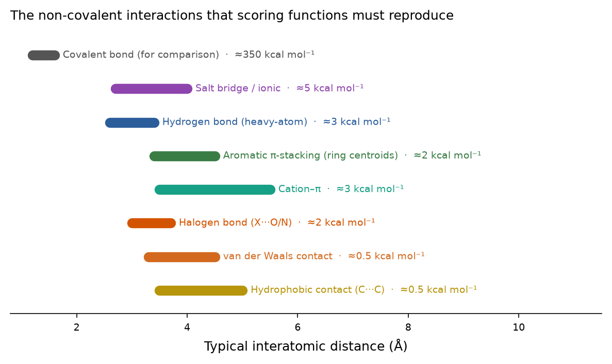
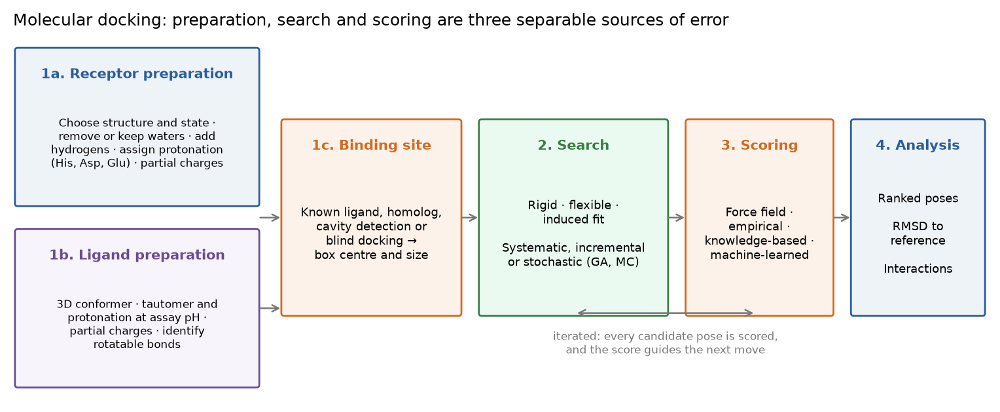
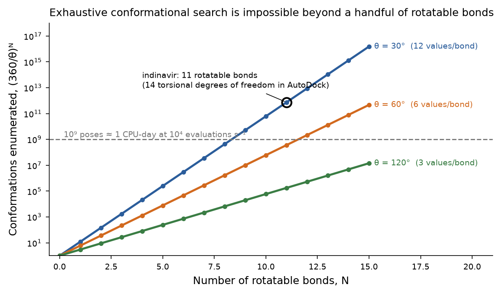
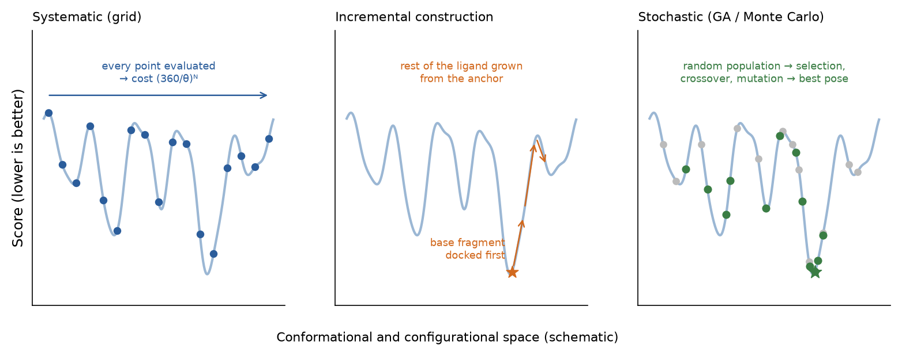
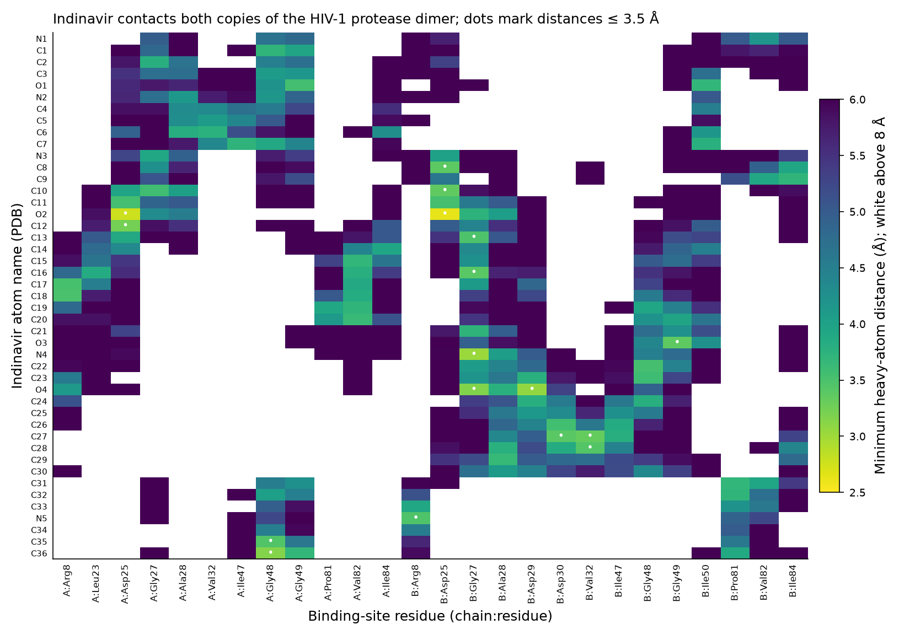
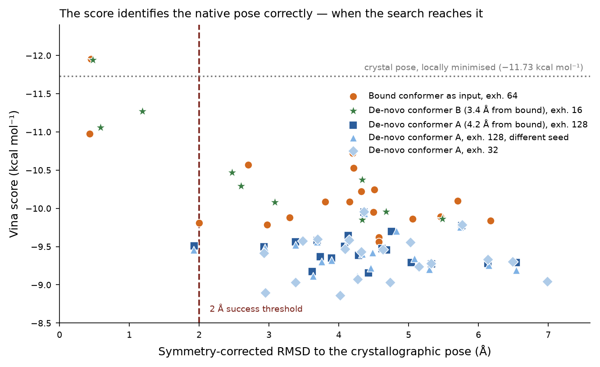
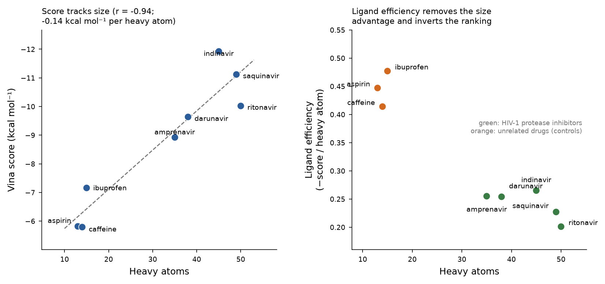

Este documento amplía la tercera clase del módulo. El Tópico 2 terminó con una estructura —experimental o predicha— y con la advertencia de que su calidad acota todo lo que viene después. Este tópico usa esa estructura para responder una pregunta nueva: dada una molécula pequeña, ¿dónde y cómo se une, y con qué fuerza? La respuesta proviene de dos maquinarias separables, una búsqueda que genera poses candidatas y una función de puntuación (scoring function) que las ordena, y la mayor parte de lo que un usuario necesita saber es cuál de las dos está fallando. Para hacerlo concreto, la Sección 7 reporta un experimento completo de re-docking realizado para este documento —indinavir en la proteasa del VIH-1 (PDB 1HSG) con AutoDock Vina— cuyo resultado es instructivo precisamente porque una de las cinco corridas falla.
Objetivos de aprendizaje
- Usar correctamente el vocabulario del docking: ligando, receptor, sitio de unión, pose, modo de unión, función de puntuación, ordenamiento (ranking).
- Explicar la termodinámica de la unión lo suficiente como para saber qué representa y qué no representa un puntaje de docking (ΔG, Kd, entalpía–entropía, desolvatación).
- Preparar un receptor y un ligando: estados de protonación, tautómeros, aguas, cargas parciales, enlaces rotables, definición de la caja.
- Cuantificar el tamaño combinatorio de la búsqueda y describir las estrategias sistemáticas, incrementales y estocásticas, incluido el funcionamiento de un algoritmo genético.
- Distinguir entre docking rígido, de ligando flexible, de ajuste inducido y de ensamble, y elegir entre ellos para un blanco dado.
- Clasificar las funciones de puntuación en las familias basadas en campos de fuerza, empíricas, basadas en conocimiento y de aprendizaje automático, y señalar los modos de falla conocidos de cada una.
- Validar un protocolo de docking mediante re-docking, calcular el RMSD corregido por simetría e interpretar el criterio de 2 Å.
- Diagnosticar si una falla de docking proviene de la preparación, de la búsqueda o de la puntuación.
- Diseñar una campaña de cribado virtual y evaluarla con el factor de enriquecimiento, el ROC-AUC y el BEDROC.
Sección 1Vocabulario
Los términos siguientes se usan con precisión en la literatura, y confundir dos de ellos es la fuente más común de malentendidos en un informe de docking.
- Ligando
- La molécula que se ubica —por lo general un compuesto orgánico pequeño (< ~700 g mol⁻¹), pero también un péptido, un metabolito o un fragmento.
- Receptor (blanco)
- La macromolécula que aporta el sitio —por lo general una proteína, a veces DNA, RNA o un ensamble de proteínas de membrana.
- Sitio de unión
- El conjunto de residuos que contactan físicamente al ligando; por convención, aquellos con algún átomo pesado a menos de 4–6 Å de un átomo pesado del ligando. Un sitio ortostérico es el que ocupa el sustrato o agonista natural; un sitio alostérico se encuentra en otra parte y modula la actividad a distancia; un sitio críptico no es visible en la estructura apo y solo se abre al unirse el ligando.
- Pose
- Una ubicación candidata: una posición, una orientación y una conformación interna del ligando. Una corrida de docking produce muchas poses.
- Modo de unión
- La pose correcta: la orientación y la conformación que el complejo adopta realmente, según se determina experimentalmente. Una pose es una hipótesis; un modo de unión es un hecho.
- Función de puntuación
- La función que asigna un número a una pose, con la intención de que se correlacione con la energía libre de unión.
- Ordenamiento (ranking)
- Ordenamiento de las poses (ranking de poses) o de distintos ligandos (ranking de afinidad) según su puntaje. Las dos tareas son diferentes y un programa puede ser bueno en una y deficiente en la otra.
- Docking
- El procedimiento computacional que muestrea poses y les asigna un puntaje.
Tres tareas, tres criterios de éxito diferentes
La literatura de docking evalúa tres capacidades distintas, y los artículos que las confunden son la razón por la que el docking tiene una reputación dispar.
- Predicción de poses (docking power): ¿puede el programa reproducir un modo de unión cristalográfico conocido? Se mide con el RMSD, con un umbral de éxito de 2 Å. Los programas modernos aciertan en aproximadamente un 60–80 % de los casos en conjuntos de referencia (benchmarks) curados.[20]
- Predicción de afinidad (scoring power): ¿se correlaciona el puntaje con el ΔG medido para una serie de complejos? El r de Pearson es típicamente 0.4–0.6 en el benchmark CASF —suficiente para separar ligandos fuertes de débiles, pero muy lejos de bastar para ordenar análogos que difieren en un factor de tres.[20],[21]
- Cribado virtual (screening power): ¿es capaz el puntaje de ubicar a los verdaderos activos por encima de los señuelos (decoys)? Se mide con el enriquecimiento y el ROC-AUC (Sección 8). Esta es la tarea en la que el docking es realmente bueno, y solo requiere que el ordenamiento sea correcto en promedio.
Sección 2Qué es el docking y por qué importa
El docking molecular (acoplamiento molecular) predice la geometría preferida de un complejo entre dos moléculas. La imagen clásica es la llave y cerradura de Emil Fischer, de 1894: un ligando rígido cuya forma complementa un sitio rígido. Es una primera aproximación útil y la base del primer programa de docking, DOCK (Kuntz et al., 1982), que hacía coincidir los átomos del ligando con una imagen negativa de la cavidad construida a partir de esferas superpuestas.[1] Pero las proteínas no son rígidas. El ajuste inducido (induced fit) de Koshland (1958) describe un sitio que se reorganiza al producirse la unión, y la visión moderna de selección conformacional plantea que la proteína apo ya visita la conformación unida como parte de su ensamble térmico y que el ligando simplemente la selecciona y la estabiliza —las dos cuencas del paisaje energético del Tópico 2. La analogía de la "mano en el guante" usada en clase captura esto: ambos participantes se ajustan. El modelo que implementa un programa de docking determina qué errores comete.
Dos aplicaciones justifican el esfuerzo.
- Comprender el reconocimiento molecular. La señalización celular depende de qué moléculas se asocian, en qué orientación y con qué fuerza; la orientación misma puede determinar el resultado biológico, ya que un agonista y un antagonista pueden ocupar el mismo bolsillo y diferir solo en qué residuos contactan y qué cambio conformacional estabilizan. El docking proporciona hipótesis comprobables sobre esos contactos —hipótesis que la mutagénesis puede refutar.
- Diseño de fármacos basado en estructura. Dada una estructura validada del blanco, el docking se usa para (i) cribar bibliotecas de 10⁵–10⁹ compuestos en busca de candidatos que valga la pena comprar y ensayar, (ii) explicar la relación estructura–actividad de una serie y sugerir qué sustituyente modificar, y (iii) proponer contactos que determinen la selectividad entre un blanco y sus parálogos fuera de blanco (off-target). Lo esencial es la economía: una corrida de docking cuesta segundos de CPU por molécula, un ensayo bioquímico cuesta órdenes de magnitud más por molécula, y un candidato clínico cuesta del orden de 10⁹ dólares estadounidenses. El docking no reemplaza al experimento; decide qué experimentos realizar primero. El Tópico 4 desarrolla esto en un ciclo de diseño completo.
Entre los éxitos bien documentados se cuentan los inhibidores de la proteasa del VIH-1 (el sistema usado en la Sección 7), los inhibidores de la neuraminidasa, varios inhibidores de quinasas y —en la era de las bibliotecas ultragrandes— ligandos para el receptor de dopamina D4 y los receptores de melatonina, descubiertos mediante el docking de cientos de millones de compuestos.[22],[23] Igualmente bien documentados están los fracasos, y el resto de este tópico trata en gran medida de reconocerlos antes de que lleguen a una publicación.
Sección 3La física que un puntaje intenta aproximar
La unión es un equilibrio: R + L ⇌ RL, con constante de disociación Kd = [R][L]/[RL]. La energía libre estándar de unión es
Dos consecuencias merecen énfasis. Primero, todo el rango farmacológicamente relevante —desde un fragmento milimolar hasta un fármaco picomolar— abarca unas 15 kcal mol⁻¹, y distinguir un compuesto de 10 nM de uno de 100 nM requiere una exactitud de 1.4 kcal mol⁻¹, que está por debajo del error de cualquier función de puntuación y es comparable a la energía térmica RT. Segundo, ΔG es una diferencia entre los estados unido y libre, por lo que incluye contribuciones que una sola pose no puede mostrar: tanto el ligando como el sitio deben despojarse de su agua ordenada (desolvatación, una gran entalpía positiva para los grupos polares), el ligando pierde entropía traslacional, rotacional y torsional al unirse (aproximadamente 0.5–0.7 kcal mol⁻¹ por cada enlace rotable congelado), y la proteína puede pagar un costo de reorganización. Una pose que se ve perfecta puede aun así corresponder a una unión débil, porque el precio de desolvatarla supera la recompensa de sus contactos.

En un complejo real estas interacciones se suman sobre decenas de pares de átomos. El complejo de indinavir analizado en la Sección 7 ilustra esta mezcla: el fármaco establece nueve contactos polares cortos, incluido el hidroxilo que hace de puente entre ambos aspartatos catalíticos del dímero de la proteasa, mientras que la mayor parte de su superficie —los grupos fenilo, indanilo, piridilo y terc-butilo— establece contacto hidrofóbico con valinas, isoleucinas y alaninas de ambas subunidades.
Sección 4Preparación: donde se introduce la mayoría de los errores

4.1 Preparación del receptor
- Elegir la estructura y el estado. Preferir una estructura experimental de resolución adecuada (≤ 2.5 Å) con un ligando del mismo quimiotipo unido; preferir la forma holo sobre la apo cuando se sabe que el sitio se reorganiza. Revisar los criterios del Tópico 2: resolución, R-free, factores B del sitio, residuos ausentes en
REMARK 465y el ajuste del ligando en el informe de validación. Un modelo de AlphaFold puede usarse cuando no existe nada más, pero hay que recordar que es apo, de un solo estado y sin ligando (Tópico 2, Sección 10.3). - Seleccionar las cadenas y el ensamble biológico. Una unidad asimétrica cristalográfica no es necesariamente la unidad biológica. La proteasa del VIH-1 es un homodímero obligado y su sitio se encuentra sobre el eje del dímero: hacer docking en una sola cadena carece de sentido. A la inversa, hacer docking en un sitio formado por un contacto cristalográfico es un artefacto clásico.
- Decidir qué hacer con las aguas. Por defecto se eliminan, porque un agua que estorba al ligando lo bloquea. Pero las aguas conservadas, enterradas y bien ordenadas que hacen de puente entre el ligando y la proteína forman parte del sitio. El ejemplo canónico es el agua del flap (flap water) de la proteasa del VIH-1, que acepta puentes de hidrógeno de las amidas de Ile50 de ambos flaps y dona a dos carbonilos del inhibidor; está presente en casi todas las estructuras proteasa–inhibidor, y conservarla mejora el re-docking (Sección 7).[26] Criterios para conservar un agua: enterrada, con un factor B comparable al de la proteína, presente en varias estructuras independientes y formando ≥ 2 puentes de hidrógeno con la proteína.
- Agregar hidrógenos y asignar la protonación. Las estructuras de rayos X no tienen hidrógenos. La mayoría de las posiciones son inequívocas; las que no lo son son exactamente las que importan: Asp/Glu (podrían estar protonados en un sitio enterrado de baja constante dieléctrica), His (cuál de los dos tautómeros, o doblemente protonada), Cys (tiol o tiolato), Lys (rara vez neutra), y la orientación de las amidas de Asn/Gln y de los anillos de His, que los rayos X no pueden distinguir porque N y O tienen casi el mismo número de electrones. Usar PROPKA/PDB2PQR[33] o H++, y verificar el resultado a simple vista frente a la red de puentes de hidrógeno. En la proteasa del VIH-1, la díada catalítica Asp25/Asp25′ se modela ampliamente con un aspartato protonado cuando hay unido un inhibidor que contiene un hidroxilo, y esa elección cambia el puntaje.
- Asignar cargas parciales y tipos de átomo según lo requiera el programa (cargas de Gasteiger para los programas de la familia AutoDock; cargas de campo de fuerza para otros).
- Conservar cofactores, metales e iones estructurales que formen parte del sitio, con la carga y la geometría de coordinación correctas. Los sitios de zinc, magnesio y níquel son mal manejados por las funciones de puntuación genéricas y pueden requerir parámetros especializados.
4.2 Preparación del ligando
Un programa de docking necesita una molécula tridimensional químicamente razonable, no un dibujo. Los pasos son:
- De 2D a 3D. Generar coordenadas a partir del SMILES con un generador de confórmeros (RDKit ETKDG, OMEGA, CORINA) y relajarlas con un campo de fuerza. Este confórmero inicial no es inocuo: la mayoría de los programas mantienen fijas las conformaciones de los anillos, las longitudes de enlace y los ángulos de enlace, y varían solo las torsiones rotables declaradas, de modo que el confórmero de entrada fija silenciosamente parte de la respuesta. La Sección 7 cuantifica esto con dos confórmeros de la misma molécula que dan resultados completamente distintos.
- Estereoquímica. Cada estereocentro no definido duplica el número de moléculas por acoplar. Enumerarlos explícitamente; nunca dejar que el programa elija.
- Protonación y tautómeros al pH del ensayo. Un ácido carboxílico está ionizado a pH 7.4, una amina alifática está protonada, un imidazol puede estar en cualquiera de las dos formas; una 2-hidroxipiridina puede existir como piridona. Cada forma tiene distintos donores y aceptores de puentes de hidrógeno y, por lo tanto, una pose distinta. La clase entrega las dos estrategias aceptables: acoplar la única forma esperada a pH fisiológico, o enumerar todas las formas plausibles, acoplar cada una y quedarse con la mejor, indicando cuál de las dos se hizo.
- Cargas parciales y definición de enlaces rotables. Los enlaces amida suelen tratarse como no rotables; los grupos terminales como metilo e hidroxilo pueden ignorarse para ahorrar grados de libertad.
- Filtros de sensatez para bibliotecas: eliminar sales y solventes, conservar una forma por molécula, aplicar reglas de semejanza a fármaco (drug-likeness) o a compuesto líder (lead-likeness) si corresponde, y eliminar las subestructuras conocidas por interferir con los ensayos (PAINS) antes del docking, no después.
4.3 Definición del sitio de unión y de la caja
Los programas de docking buscan dentro de una región definida por el usuario. Se presentan tres situaciones:
- Ya hay un ligando unido en la estructura o en una estructura homóloga: centrar la caja en él. Esta es la situación de re-docking o de cross-docking, y es la única en la que un protocolo puede validarse (Sección 7).
- El sitio se conoce por la bioquímica (residuos catalíticos, mutagénesis): centrar la caja en el centroide de esos residuos.
- El sitio es desconocido. Usar un algoritmo de detección de cavidades —fpocket, SiteMap, CASTp, DoGSiteScorer—, que ordenan los bolsillos superficiales según volumen, grado de encierro e hidrofobicidad, o realizar un docking ciego (blind docking) sobre toda la proteína con una caja grande. El docking ciego es mucho menos confiable: el espacio de búsqueda es mayor, la función de puntuación tiene más oportunidades de ser engañada, y el resultado debe tratarse como una hipótesis que hay que poner a prueba mediante mutagénesis sitio-dirigida.
La caja (grid box) debe encerrar el sitio con un margen de aproximadamente 5–8 Å más allá de la extensión esperada del ligando; si es demasiado pequeña trunca las poses, y si es demasiado grande degrada tanto la velocidad como la exactitud, porque la búsqueda tiene más espacio de señuelos que explorar. En la Sección 7 la caja mide 26 × 22 × 22 Å y está centrada en el ligando cristalográfico, cuya propia extensión es de 14.9 × 10.2 × 8.6 Å.
Sección 5Algoritmos de búsqueda
5.1 El tamaño del problema
Ubicar un cuerpo rígido requiere seis grados de libertad: tres traslaciones y tres rotaciones. Cada enlace rotable del ligando agrega un grado de libertad torsional, y permitir que se muevan las cadenas laterales del sitio agrega varios más. Si cada torsión se muestrea en pasos de θ grados, un ligando con N enlaces rotables tiene (360/θ)N conformaciones, antes siquiera de considerar los seis grados de libertad de cuerpo rígido.

Por lo tanto, la enumeración exhaustiva está descartada para cualquier cosa más grande que un fragmento, exactamente como en el caso del plegamiento de proteínas del Tópico 2. Todo algoritmo práctico o bien reduce la dimensionalidad (acoplar confórmeros rígidos generados de antemano) o bien muestrea de manera inteligente (construcción incremental, optimización estocástica).

5.2 Docking rígido: complementariedad de forma
En el docking rígido la conformación del ligando se mantiene fija durante la corrida; la flexibilidad del ligando se maneja generando previamente muchos confórmeros y acoplando cada uno por separado. El algoritmo original de DOCK —descrito en la clase— construye una imagen negativa de la cavidad como un conjunto de esferas superpuestas cuyos centros llenan el espacio vacío; luego hace coincidir los átomos del ligando con los centros de las esferas de modo que las distancias interatómicas reproduzcan las distancias entre centros dentro de una tolerancia, orienta el ligando mediante superposición por mínimos cuadrados de los pares coincidentes, rechaza las ubicaciones con choques estéricos y asigna puntaje al resto.[1] Las nuevas orientaciones provienen de nuevas correspondencias átomo–esfera, de forma exhaustiva. El enfoque es rápido, sigue siendo la base de los métodos basados en forma (y del docking proteína–proteína por correlación de Fourier, Sección 9), y su debilidad es evidente: un ligando cuya conformación unida no está en el conjunto generado previamente nunca podrá ubicarse correctamente.
5.3 Docking de ligando flexible
El docking de ligando flexible, el estándar actual, genera conformaciones del ligando durante la corrida. Predominan dos estrategias.
La construcción incremental (FlexX, DOCK 4+, el embudo jerárquico de Glide, Surflex) divide el ligando en sus enlaces rotables, acopla un fragmento base rígido elegido por su capacidad de establecer interacciones específicas, y luego agrega los fragmentos restantes uno a la vez, enumerando sus torsiones y conservando las mejores soluciones parciales en cada etapa. Es determinista y rápida, y su modo de falla es un compromiso temprano con una ubicación equivocada del ancla.
La optimización estocástica (AutoDock, AutoDock Vina, GOLD, rDock, ICM) muestrea el espacio de poses con aleatoriedad: Monte Carlo con recocido simulado, algoritmos genéticos, algoritmos genéticos lamarckianos (un AG cuyos descendientes se minimizan energéticamente de forma local, y cuyas coordenadas minimizadas se reescriben en el genoma), enjambres de partículas o —en Vina— una cadena de Monte Carlo de pasos aleatorizados, cada uno seguido de una optimización local cuasi-Newton, ejecutada varias veces en paralelo.[2],[3],[4] Los métodos estocásticos encuentran buenas soluciones en minutos, pero dan una respuesta distinta en cada corrida a menos que se fije la semilla aleatoria, y su exhaustividad está controlada por un parámetro —exhaustiveness en Vina, el número de corridas del AG en AutoDock— que debe aumentarse para ligandos con muchos enlaces rotables.
5.4 Cómo funciona un algoritmo genético
La clase describe el algoritmo genético usado por GOLD y AutoDock; vale la pena enunciarlo con precisión, ya que es el ejemplo más claro de una búsqueda estocástica.
- Codificación. Una pose se representa como un cromosoma: una cadena de genes que contiene la traslación (3 números), la orientación (4 números como cuaternión, o 3 ángulos de Euler) y un gen por cada torsión rotable. GOLD agrega genes que emparejan grupos formadores de puentes de hidrógeno del ligando y de la proteína.
- Población inicial. Se generan al azar unos cuantos cientos de cromosomas dentro de la caja.
- Aptitud (fitness). Cada cromosoma se decodifica en coordenadas y se le asigna un puntaje; el puntaje es su aptitud.
- Selección. Los progenitores se extraen preferentemente de la mitad más apta (selección por ruleta o por torneo).
- Cruzamiento. Dos progenitores intercambian bloques de genes —por ejemplo, la traslación de uno con las torsiones del otro—, produciendo descendientes que combinan una buena posición con una buena conformación.
- Mutación. Los genes se perturban al azar con una probabilidad pequeña, que es lo que permite a la población escapar de un mínimo local.
- Reemplazo e iteración. Los descendientes reemplazan a los miembros menos aptos, y los pasos 3–6 se repiten durante un número fijo de generaciones o hasta que la mejor aptitud deja de mejorar.
La variante lamarckiana de AutoDock inserta una minimización local después de la decodificación y reescribe los valores optimizados en el cromosoma, de modo que las mejoras adquiridas se heredan. En la práctica, esto converge con muchas menos evaluaciones de energía que un AG puro.[2]
5.5 Flexibilidad del receptor: ajuste inducido y ensambles
Tratar el receptor como rígido es la aproximación más fuerte del docking de rutina, y a menudo es la razón por la que un activo conocido no logra acoplarse. Existen cuatro niveles de tratamiento, de costo creciente.
| Enfoque | Qué se mueve | Costo | Cuándo usarlo |
|---|---|---|---|
| Receptor rígido | Nada | Línea base | Opción por defecto; adecuado cuando existe una estructura holo con un ligando similar |
| Potenciales suaves | Nada, pero los choques se penalizan de forma menos abrupta | Despreciable | Tolerancia rápida a pequeños ajustes de las cadenas laterales; degrada la discriminación de poses |
Cadenas laterales flexibles (Vina --flex, GOLD, AutoDock) | Torsiones de cadenas laterales seleccionadas, por lo general las que están dentro de un radio en torno al sitio | Cada cadena lateral agregada multiplica el espacio de búsqueda; típicamente ≤ 5–8 residuos | Flexibilidad rotamérica conocida (p. ej., una tirosina o una metionina que regula el acceso al bolsillo) |
| Protocolos de ajuste inducido (Schrödinger IFD, RosettaLigand) | Docking iterado → reempaquetamiento de cadenas laterales y minimización del esqueleto → re-docking | Horas por ligando | Un puñado de compuestos líderes, no un cribado |
| Docking de ensamble | Nada dentro de una corrida; se acoplan en paralelo varias conformaciones del receptor y se combinan los resultados | Lineal en el número de estructuras | Blancos con estados conformacionales documentados; el compromiso práctico para el cribado |
El docking de ensamble merece el énfasis que le da la clase. En lugar de una estructura, se usan varias —estructuras cristalinas de la misma proteína con distintos ligandos, modelos de RMN, frames extraídos de una trayectoria de dinámica molecular (Tópico 5) o predicciones alternativas de AlphaFold—, se acopla cada ligando en cada receptor y se conserva, para cada ligando, su mejor puntaje en todo el ensamble.[12],[13] Esta es una implementación directa de la selección conformacional y recupera activos que cualquier estructura individual pierde. Su costo es que cada receptor adicional también da a los señuelos una nueva oportunidad de obtener un buen puntaje, por lo que el enriquecimiento no siempre mejora; el ensamble debe elegirse deliberadamente (estados distintos y respaldados experimentalmente) en lugar de tomar instantáneas arbitrarias de una trayectoria.
La diapositiva de la clase también señala que AlphaFold ordena modelos de quinasas a través de las cuencas inactiva y activa —un recordatorio de que las estructuras predichas pueden por sí mismas aportar un ensamble, siempre que los estados se contrasten con lo que se sabe del blanco.
Puntos clave — Sección 5
- Espacio de búsqueda = 6 grados de libertad de cuerpo rígido + N torsionales; la enumeración exhaustiva escala como (360/θ)N.
- El docking rígido fija el confórmero; el docking de ligando flexible lo construye de forma incremental o lo muestrea de forma estocástica.
- Los algoritmos genéticos codifican una pose como un cromosoma y hacen evolucionar una población mediante selección, cruzamiento y mutación; los AG lamarckianos agregan minimización local.
- Las corridas estocásticas no son reproducibles a menos que se fije la semilla, y su exhaustividad es un parámetro (exhaustiveness) que debe escalar con la flexibilidad del ligando.
- La flexibilidad del receptor es la mayor aproximación que persiste; el docking de ensamble es el compromiso práctico.
Sección 6Funciones de puntuación
6.1 Cuatro familias
Una función de puntuación debe evaluarse millones de veces por corrida, por lo que sacrifica rigor a cambio de velocidad. La clasificación de la clase es la estándar.[14]
| Familia | Construcción | Términos | Ejemplos | Debilidad característica |
|---|---|---|---|---|
| Basadas en campos de fuerza | Energía de mecánica molecular del complejo, a veces con un modelo de solvatación | Van der Waals de Lennard-Jones, electrostática de Coulomb con una constante dieléctrica dependiente de la distancia, término explícito de puente de hidrógeno, tensión torsional | DOCK, AutoDock 4, GoldScore | Sin entropía; la electrostática en fase gaseosa sobrepondera los grupos cargados; la desolvatación se trata de forma burda |
| Empíricas | Suma ponderada de términos con motivación física, con pesos ajustados por regresión a las afinidades medidas de un conjunto de entrenamiento de complejos | Recuentos de puentes de hidrógeno, contactos iónicos, superficie hidrofóbica, enlaces rotables congelados, área enterrada | ChemScore, PLP, GlideScore, X-Score, AutoDock Vina | Transferibilidad: la exactitud depende de cuán similar sea el blanco al conjunto de entrenamiento |
| Basadas en conocimiento | Potenciales estadísticos a partir de la distribución observada de distancias entre pares de átomos en el PDB, invertida mediante una relación de Boltzmann | Potenciales por pares de tipos de átomo en función de la distancia | PMF, DrugScore, ITScore, DFIRE | El estado de referencia es arbitrario; favorecen las interacciones frecuentes en lugar de las fuertes |
| De aprendizaje automático | Modelo no lineal (bosque aleatorio, gradient boosting, red convolucional de grafos o 3D) entrenado con estructuras de afinidad medida | Características aprendidas del complejo | RF-Score, NNScore, PLEC, Pafnucy, puntajes gnina/CNN, modelos generativos tipo DiffDock | Sesgo del conjunto de datos: el desempeño puede provenir de memorizar la identidad del ligando o de la proteína en lugar de las interacciones; requiere particiones cuidadosas (Tópico 2, Sección 9) |
La puntuación de consenso (consensus scoring) combina varias funciones —por rango, por votación o por puntaje normalizado— bajo el supuesto de que sus errores son parcialmente independientes. Típicamente mejora de forma modesta el enriquecimiento del cribado y es barata, ya que el paso costoso es la generación de poses.[15] No mejora mucho la predicción de poses y no puede corregir un error sistemático compartido por todas las funciones.
6.2 Una función concreta: AutoDock Vina
Dado que la Sección 7 la utiliza, vale la pena escribir explícitamente la función de Vina. Es empírica y aditiva sobre los pares de átomos pesados ligando–proteína, y cada término es una función simple de la distancia superficial dij = rij − Ri − Rj (la distancia interatómica menos los dos radios de van der Waals):[3]
Tres características son típicas de toda la familia empírica. No hay un término electrostático explícito: las interacciones de carga quedan absorbidas en los términos de puente de hidrógeno y estéricos, razón por la cual Vina maneja mal los metales y los sitios muy cargados. No hay término de desolvatación. Y el puntaje se reporta en kcal mol⁻¹, lo que invita al lector a interpretarlo como una energía libre; los pesos se ajustaron para reproducir las afinidades de un conjunto de entrenamiento, de modo que las unidades tienen sentido en promedio y son engañosas en cualquier caso individual.
6.3 Lo que las funciones de puntuación no pueden hacer
Limitaciones conocidas y sus consecuencias
- La entropía se aproxima mediante un recuento. La entropía torsional entra como una penalización por enlace rotable; la entropía traslacional y rotacional de la unión y la entropía del agua liberada están prácticamente ausentes.
- La desolvatación está mal modelada, por lo que los ligandos polares y cargados suelen sobrevalorarse y el enterramiento de un grupo cargado no se penaliza como debería.
- Los puntajes crecen con el tamaño molecular. Más átomos establecen más contactos; por lo tanto, casi todas las funciones de puntuación prefieren las moléculas más grandes, independientemente de su afinidad real. La Sección 7.3 mide este sesgo y muestra la corrección estándar, la eficiencia de ligando = −ΔG/átomo pesado.[16]
- La reorganización de la proteína y el costo de la conformación unida del ligando suelen ignorarse.
- Las interacciones mediadas por agua se pierden, a menos que las aguas relevantes se conserven explícitamente.
- Consecuencia.[24] Tratar un puntaje de docking como un clasificador —probable ligando / improbable ligando— y nunca como una afinidad medida. No reportar un puntaje como "ΔG predicho" ni convertirlo en una Kd. No comparar puntajes obtenidos con distintos programas, receptores o definiciones de caja. Para estimaciones cuantitativas, usar los métodos más costosos del Tópico 5 (MM/PBSA, MM/GBSA, perturbación de energía libre).
Sección 7Validación: un experimento de re-docking realizado para este documento
Un protocolo de docking solo es creíble si puede reproducir una respuesta conocida. La prueba estándar es el re-docking: tomar una estructura cristalina de un complejo, retirar el ligando, volver a acoplarlo y medir cuán lejos está la pose predicha de la experimental. El criterio de éxito convencional es un RMSD inferior a 2.0 Å, aproximadamente la resolución a la que puede considerarse que la orientación de un ligando se ha reproducido correctamente.[17] El experimento que se reporta aquí se ejecutó específicamente para este documento; cada número es reproducible con el código de la Sección 11.
7.1 El sistema
El blanco es la proteasa del VIH-1 en complejo con indinavir (PDB 1HSG, rayos X, 2.0 Å), la estructura que respaldó el desarrollo de uno de los primeros fármacos antirretrovirales.[27] La proteasa es un homodímero obligado de 99 residuos por cadena cuyo sitio activo se encuentra sobre el eje binario, con la tríada catalítica Asp25–Thr26–Gly27 aportada por ambas subunidades y cubierta por dos flaps móviles en horquilla β. El indinavir (componente químico del PDB MK1) es un peptidomimético de 613.8 g mol⁻¹ con 45 átomos pesados, 11 enlaces rotables, 4 donores de puentes de hidrógeno, 7 aceptores, cLogP 2.87 y TPSA 118 Ų (calculados aquí con RDKit).
El análisis del complejo cristalográfico entrega la referencia con la que se juzga el docking. Veintiséis residuos tienen un átomo pesado a menos de 4 Å del ligando, trece de cada subunidad —el sitio está estrictamente compartido entre las dos copias—, y cuarenta residuos a menos de 6 Å. Hay nueve contactos polares más cortos que 3.5 Å:
| Átomo del indinavir | Átomo de la proteína | Distancia (Å) |
|---|---|---|
O2 | A:Asp25 OD1 | 2.77 |
O2 | A:Asp25 OD2 | 2.93 |
O2 | B:Asp25 OD1 | 2.63 |
O2 | B:Asp25 OD2 | 3.04 |
N4 | B:Gly27 O | 3.03 |
O4 | B:Gly27 O | 3.16 |
O4 | B:Asp29 N | 3.23 |
O4 | B:Asp29 OD2 | 3.06 |
N5 | B:Arg8 NH2 | 3.46 |
El hidroxilo central (O2) hace de puente con los cuatro oxígenos carboxilato de los dos aspartatos catalíticos a 2.63–3.04 Å, lo que constituye el sello distintivo del diseño de esta clase de fármacos como miméticos del estado de transición. Seis moléculas de agua se encuentran a menos de 3.5 Å de un nitrógeno u oxígeno del ligando, entre ellas HOH 308, el agua conservada del flap. Los contactos restantes son hidrofóbicos, como muestra la Figura 5.

1HSG). Distancia mínima entre átomos pesados de cada átomo del indinavir (filas, nombres de átomo del PDB) y cada residuo del sitio de unión (columnas, cadena:residuo); las distancias superiores a 8 Å se dejan en blanco y los puntos marcan contactos ≤ 3.5 Å. Contribuyen ambas cadenas, A y B, lo que confirma que el sitio se encuentra sobre el eje del dímero. Los contactos polares se agrupan en los dos residuos catalíticos Asp25 y en Gly27/Asp29 de la cadena B; la gran superficie hidrofóbica del fármaco contacta Leu23, Val32, Ile47, Gly48/Gly49, Pro81, Val82 e Ile84 de ambas subunidades.La preparación siguió la Sección 4: solo átomos de la proteína, hidrógenos agregados a pH 7.4 con cargas de Gasteiger, el agua del flap HOH 308 conservada como parte del receptor, los órdenes de enlace del ligando restaurados a partir del SMILES del componente químico del PDB, y una caja de 26 × 22 × 22 Å centrada en el centroide del ligando cristalográfico. Se usó AutoDock Vina 1.2.7 en todo momento, con una semilla aleatoria fija.
7.2 Resultados: lo que falla es la búsqueda, no el puntaje
Primero se realizan dos cálculos de control. Asignar puntaje a la pose cristalográfica exactamente tal como fue depositada da −11.30 kcal mol⁻¹; permitir una optimización local de esa pose, que alivia los pequeños choques inevitables al agregar hidrógenos a una estructura de 2.0 Å, da −11.73 kcal mol⁻¹. Este es el valor al que debería acercarse una corrida de docking exitosa. (Sin el agua del flap, esos mismos dos números son −10.95 y −11.34, por lo que el agua aporta alrededor de 0.35–0.40 kcal mol⁻¹ al puntaje de la pose nativa.)
Luego se realizaron cinco corridas de docking que difieren solo en el confórmero de entrada y en la exhaustividad. Todos los valores de RMSD están corregidos por simetría: corresponden al mínimo sobre la propia simetría topológica de la molécula (CalcRMS de RDKit) y sobre la simetría C2 del dímero de la proteasa, que superpone la cadena A sobre la cadena B con un RMSD de Cα de 0.52 Å; sin esta corrección, una pose correcta pero relacionada con la referencia por el eje del dímero se calificaría como una falla.
| Corrida | Confórmero de entrada | Exhaustividad | Mejor puntaje (kcal mol⁻¹) | RMSD de la pose de rango 1 (Å) | Mejor RMSD entre las 20 primeras (Å) | Rango de esa pose | Tiempo de CPU |
|---|---|---|---|---|---|---|---|
| 1 | Confórmero cristalográfico (unido) | 64 | −11.95 | 0.45 | 0.43 | 2 | 157 s |
| 2 | Confórmero de novo B (a 3.36 Å del unido) | 16 | −11.94 | 0.48 | 0.48 | 1 | 46 s |
| 3 | Confórmero de novo A (a 4.20 Å del unido) | 32 | −9.96 | 4.36 | 2.93 | 10 | 121 s |
| 4 | Confórmero de novo A | 128 | −9.95 | 4.36 | 1.93 | 7 | 354 s |
| 5 | Confórmero de novo A, otra semilla | 128 | −9.93 | 4.37 | 1.92 | 9 | 368 s |

La comparación decisiva es entre la corrida 2 y las corridas 4–5, que difieren solo en el confórmero tridimensional entregado al programa. El confórmero B, generado por RDKit con una semilla aleatoria, difiere de la conformación unida en 3.36 Å tras el alineamiento óptimo; el confórmero A, generado con otra semilla, en 4.20 Å. A partir del confórmero B, Vina reproduce la pose cristalográfica con 0.48 Å con una exhaustividad de solo 16, en 46 s. A partir del confórmero A, la pose de rango 1 está a 4.36 Å —una falla según el criterio de 2 Å— y sigue así con exhaustividad 128 y dos semillas distintas, aunque una pose cercana a la nativa, a 1.9 Å, sí aparece más abajo en la lista, en el rango 7.
Lo que enseña este experimento
- El re-docking a partir del confórmero unido no es una validación. La corrida 1 reproduce la pose con 0.45 Å, pero se le entregó la respuesta: Vina varía solo las torsiones declaradas y mantiene las conformaciones de los anillos, las longitudes de enlace y los ángulos de enlace exactamente como se entregaron. Un artículo que reporta el RMSD de re-docking sin indicar cómo se generó el confórmero de entrada ha demostrado muy poco.[25]
- La generación de confórmeros forma parte del protocolo de docking. La misma molécula, el mismo programa y el mismo receptor dieron 0.48 Å y 4.36 Å según qué confórmero se ingresó. Generar varios confórmeros, o usar un programa que muestree la geometría de anillos y ángulos.
- Distinguir una falla de búsqueda de una falla de puntuación. Aquí el puntaje de la pose nativa es 2 kcal mol⁻¹ mejor que el de cualquier señuelo, de modo que la puntuación es adecuada y la búsqueda es el cuello de botella. El diagnóstico es exactamente el que se realizó arriba: asignar puntaje a la pose experimental. Si obtiene un mejor puntaje que todo lo que produjo la búsqueda, falló la búsqueda; si la búsqueda produjo una pose cercana a la nativa pero la ubicó por debajo de una equivocada, falló la puntuación; si la pose experimental obtiene un mal puntaje, la preparación es incorrecta.
- La exhaustividad no es una cura. Multiplicarla por cuatro cambió el RMSD de rango 1 de 4.36 a 4.36 Å. Más muestreo no puede crear un grado de libertad que el programa no tiene.
- Reportar la lista completa de poses, no solo la de rango 1. En las corridas 4 y 5 existía una pose cercana a la nativa en los rangos 7 y 9. En el trabajo prospectivo, inspeccionar las cinco a diez primeras poses, y agruparlas, es una práctica estándar.
7.3 Sesgo de tamaño y eficiencia de ligando
El segundo experimento acopla ocho moléculas en el mismo sitio preparado: cinco inhibidores de la proteasa del VIH-1 (amprenavir, darunavir, indinavir, saquinavir, ritonavir) y tres fármacos no relacionados como controles negativos (aspirina, cafeína, ibuprofeno). Todos se construyeron a partir de los SMILES de sus componentes químicos del PDB, se les generaron coordenadas tridimensionales (embedding) y se optimizaron de forma idéntica, y se acoplaron con exhaustividad 16.
| Ligando | Comp. quím. PDB | Átomos pesados | PM (g mol⁻¹) | Enlaces rotables | Puntaje de Vina (kcal mol⁻¹) | Eficiencia de ligando | Tiempo de CPU |
|---|---|---|---|---|---|---|---|
| aspirina | AIN | 13 | 180.2 | 2 | -5.82 | 0.447 | 2 s |
| cafeína | CFF | 14 | 194.2 | 0 | -5.80 | 0.414 | 1 s |
| ibuprofeno | IBP | 15 | 206.3 | 4 | -7.16 | 0.477 | 2 s |
| amprenavir | 478 | 35 | 505.6 | 11 | -8.93 | 0.255 | 28 s |
| darunavir | 017 | 38 | 547.7 | 11 | -9.64 | 0.254 | 34 s |
| indinavir | MK1 | 45 | 613.8 | 11 | -11.93 | 0.265 | 46 s |
| saquinavir | ROC | 49 | 670.9 | 12 | -11.12 | 0.227 | 71 s |
| ritonavir | RIT | 50 | 721.0 | 17 | -10.03 | 0.201 | 110 s |

La interpretación requiere cuidado, y es la razón de incluir el experimento. Los cinco inhibidores verdaderos obtienen todos mejores puntajes que los tres controles (−8.9 a −11.9 frente a −5.8 a −7.2), de modo que la función de puntuación los habría enriquecido en un cribado, la tarea en la que el docking es bueno. Pero dentro de los inhibidores el ordenamiento es incorrecto: el ritonavir, un inhibidor picomolar, obtiene un peor puntaje que el indinavir, y el orden refleja el número de átomos pesados más que la potencia. Y la columna de eficiencia de ligando, que es la métrica correcta para comparar moléculas de distinto tamaño en una campaña basada en fragmentos o de búsqueda de hits, hace que la aspirina y el ibuprofeno se vean mejores que todos los fármacos antirretrovirales, porque la eficiencia de ligando solo tiene sentido entre moléculas que efectivamente se unen. La lección es que un puntaje, una eficiencia de ligando y una afinidad experimental responden tres preguntas diferentes, y que una campaña de docking debe declarar qué pregunta está planteando.
Sección 8Cribado virtual
El cribado virtual basado en estructura (structure-based virtual screening) aplica el docking a una biblioteca de compuestos para ordenarlos y comprar o sintetizar solo la fracción superior. Las bibliotecas comerciales alcanzan hoy 10⁹–10¹⁰ moléculas de síntesis a pedido (make-on-demand; Enamine REAL, ZINC-22), y campañas a esa escala han entregado ligandos potentes directamente a partir de los resultados del docking.[22],[23] Dos cosas hacen que funcione: la tarea solo requiere que los activos estén enriquecidos cerca de la parte superior, no correctamente ordenados; y la tasa de aciertos del docking (típicamente 1–20 % en el punto de corte elegido, según el blanco) está uno a dos órdenes de magnitud por encima del cribado aleatorio.
Diseño de una campaña
- Validar primero el protocolo mediante re-docking (Sección 7) y, mejor aún, mediante cribado retrospectivo: acoplar un conjunto de activos conocidos junto con señuelos y verificar que los activos queden enriquecidos. Los señuelos deben estar emparejados en propiedades (PM, logP, carga y enlaces rotables similares) pero ser topológicamente disímiles, como en los conjuntos DUD-E y LIT-PCBA; los señuelos no emparejados producen un enriquecimiento halagador y carente de significado.[18],[19]
- Preparar la biblioteca: desalar, enumerar estados de protonación y estereoisómeros, filtrar por semejanza a fármaco o a compuesto líder y eliminar PAINS y grupos reactivos.
- Acoplar por etapas: una pasada rápida y gruesa sobre toda la biblioteca, luego una pasada más exhaustiva sobre el 1–5 % superior, y luego una nueva puntuación (rescoring) con una función ortogonal o con MM/GBSA.
- Agrupar e inspeccionar manualmente. La diversidad química del conjunto seleccionado importa más que exprimir los últimos 0.2 kcal mol⁻¹, y la inspección visual de las poses todavía detecta artefactos que ningún filtro detecta: un ligando que no interactúa con ningún residuo conservado, una carga enterrada no satisfecha, una pose encajada en un artefacto cristalográfico.
- Ensayar experimentalmente y retroalimentar con el resultado. Una campaña que nunca se ensaya no ha producido información.
Métricas
| Métrica | Definición | Interpretación |
|---|---|---|
| Factor de enriquecimiento EFx % | (activos encontrados en el x % superior / total de activos) ÷ (x/100) | EF1 % = 20 significa veinte veces más activos en el 1 % superior que al azar. Es el número de mayor relevancia práctica, porque solo se compra la fracción superior. |
| ROC-AUC | Área bajo la curva de verdaderos positivos frente a falsos positivos | 0.5 = aleatorio, 1.0 = perfecto. Es insensible a dónde se ubican los activos en el ordenamiento, por lo que puede verse respetable con un 1 % superior inútil. |
| BEDROC (α = 20) | ROC ponderada exponencialmente que enfatiza el reconocimiento temprano | Diseñada para el problema del "reconocimiento temprano"; se reporta junto al AUC en los artículos cuidadosos. |
| Tasa de aciertos (hit rate) | Fracción de los compuestos comprados cuya actividad se confirma experimentalmente | La única métrica que importa de forma prospectiva. |
Finalmente, se aplica la contraparte práctica de la discusión sobre sensibilidad/especificidad del Tópico 1: bajar el punto de corte del puntaje compra sensibilidad a costa de precisión, y como la asimetría de costos en el cribado es extrema —un activo perdido no tiene un costo visible, mientras que un falso positivo comprado cuesta dinero y tiempo—, las campañas se ajustan para lograr precisión en la fracción superior más que sensibilidad (recall).
Sección 9Más allá del docking proteína–ligando
El docking proteína–proteína aborda una geometría distinta: dos cuerpos grandes, mayormente rígidos, con una interfaz amplia y plana y sin un bolsillo profundo. Los algoritmos clásicos recorren exhaustivamente los seis grados de libertad de cuerpo rígido usando la correlación por transformada rápida de Fourier de grillas de forma y electrostáticas (ZDOCK, FTDock, ClusPro), y luego vuelven a puntuar y refinan los miles de orientaciones superiores. HADDOCK toma otra ruta: convierte la información experimental o predicha sobre qué residuos están en la interfaz —mutagénesis, perturbación del desplazamiento químico, entrecruzamiento, coevolución— en restricciones de interacción ambiguas que guían un docking flexible en CNS.[11] Desde 2021 el campo ha sido transformado por AlphaFold-Multimer y AlphaFold 3, que predicen muchos complejos con mayor exactitud que el docking, aunque siguen siendo más débiles para las interacciones transitorias, anticuerpo–antígeno y con péptidos.
El docking covalente maneja ligandos que forman un enlace con un residuo (grupos reactivos (warheads) de acrilamida dirigidas a cisteína, β-lactámicos dirigidos a serina) anclando el ligando al nucleófilo y muestreando en torno al enlace que se forma; el puntaje reporta entonces solo la parte no covalente y debe complementarse con la química del grupo reactivo. El docking de fragmentos trata con moléculas de 10–20 átomos pesados, en las que los puntajes son pequeños y la discriminación es pobre, por lo que normalmente se combina con un cribado experimental de fragmentos (rayos X, RMN, SPR). El docking en ácidos nucleicos y en proteínas de membrana requiere parámetros propios: ambos entornos están dominados por interacciones que las funciones genéricas describen mal —los esqueletos de fosfato cargados en un caso, un interior lipídico de baja constante dieléctrica en el otro.
Por último, la predicción de poses mediante aprendizaje profundo (EquiBind, TankBind, DiffDock y AlphaFold 3, que considera ligandos) trata el docking como un problema generativo en lugar de una búsqueda, y produce poses en segundos. Los benchmarks muestran un alto éxito aparente en el conjunto de prueba de PDBBind, pero una caída marcada en proteínas disímiles al conjunto de entrenamiento, y una tendencia a producir poses con geometría no física; constituyen un área de investigación activa más que un reemplazo de los métodos de este tópico.[34],[35]
Sección 10Software
| Programa | Búsqueda | Puntuación | Licencia | Notas |
|---|---|---|---|---|
| AutoDock 4[2] | Algoritmo genético lamarckiano | Basada en campo de fuerza, con desolvatación | Gratuito, código abierto | Mapas de grilla por tipo de átomo; cadenas laterales flexibles; la implementación de referencia para la docencia |
| AutoDock Vina / Vina 1.2[3],[4] | Monte Carlo + optimización local BFGS, multihilo | Empírica (Sección 6.2); también las funciones AD4 y Vinardo | Gratuito, código abierto | Dos órdenes de magnitud más rápido que AutoDock 4; API de Python; el programa de docking más usado en la literatura |
| Smina / gnina | Búsqueda de Vina | Puntuación personalizada y basada en CNN | Gratuito, código abierto | Práctico para volver a puntuar (rescoring) y para puntajes de aprendizaje automático |
| DOCK 6[1] | Coincidencia de esferas, construcción incremental | Campo de fuerza, con GB/SA opcional | Gratuito para académicos | El programa original; sólida coincidencia basada en forma |
| GOLD[5] | Algoritmo genético con genes de emparejamiento de puentes H | GoldScore, ChemScore, ChemPLP, ASP | Comercial (CCDC) | Flexibilidad de cadenas laterales, docking de ensamble, sistemáticamente alto en los benchmarks |
| Glide[6] | Embudo de filtrado jerárquico | GlideScore (empírica), modos SP y XP | Comercial (Schrödinger) | El modo XP agrega términos de desolvatación y de forma; se combina con el protocolo Induced Fit Docking |
| FlexX[7] | Construcción incremental | Empírica (derivada de Böhm) | Comercial (BioSolveIT) | Determinista y rápido |
| rDock | Algoritmo genético + Monte Carlo + minimización | Empírica, con términos de farmacóforo y de ácidos nucleicos | Gratuito, código abierto | Diseñado también para blancos de RNA y DNA |
| SwissDock / AutoDock Vina web[8] | Interfaces de servidor | — | Servicio web gratuito | Práctico para unos pocos ligandos y para la docencia; control limitado de la preparación |
| ZDOCK, ClusPro, HADDOCK[9],[10],[11] | Cuerpo rígido por FFT / flexible guiado por restricciones | Forma, electrostática, desolvatación / energías de CNS | Servicios web gratuitos | Complejos proteína–proteína y proteína–ácido nucleico |
Herramientas de apoyo usadas en este tópico: Open Babel[29] para la conversión de formatos y la adición de hidrógenos, Meeko para la preparación de archivos PDBQT, RDKit[30] para la generación de confórmeros, descriptores y RMSD corregido por simetría, PDB2PQR/PROPKA[33] para la protonación, fpocket[32] para la detección de cavidades, PLIP[31] y Arpeggio para las huellas de interacción (interaction fingerprints), y PyMOL o ChimeraX para la inspección. AutoDockTools sigue siendo la interfaz gráfica clásica para la preparación con AutoDock, aunque la API de Python usada más abajo es hoy la ruta más reproducible; el artículo de protocolo de la suite AutoDock es la referencia estándar para todo el flujo de trabajo.[28]
Sección 11Trabajo práctico
11.1 Vista interactiva del sistema
El visor carga 1HSG desde el RCSB (se requiere conexión a internet). El indinavir se muestra como barras verdes, los dos aspartatos catalíticos en naranja y el agua del flap como una esfera roja.
11.2 Reproducción del re-docking de la Sección 7
El experimento usa la API de Python de Vina, RDKit y Meeko. Se instalan con conda install -c conda-forge vina rdkit openbabel y pip install meeko.
import json, urllib.request, numpy as np, subprocess
from rdkit import Chem
from rdkit.Chem import AllChem, rdMolAlign
from Bio.PDB import PDBParser, Superimposer
from vina import Vina
# ---- 1. Receptor: protein + the conserved flap water, hydrogens at pH 7.4 ----
urllib.request.urlretrieve("https://files.rcsb.org/download/1HSG.pdb", "1HSG.pdb")
keep = [l for l in open("1HSG.pdb")
if l.startswith("ATOM") or (l.startswith("HETATM") and l[17:20] == "HOH"
and int(l[22:26]) == 308)]
open("rec.pdb", "w").write("".join(keep) + "END\n")
subprocess.run("obabel rec.pdb -xr -O rec.pdbqt -h -p 7.4 --partialcharge gasteiger",
shell=True, check=True)
# ---- 2. Ligand: bond orders from the PDB chemical component, then a de-novo conformer ----
cc = json.loads(urllib.request.urlopen(
"https://data.rcsb.org/rest/v1/core/chemcomp/MK1").read())
smiles = cc["rcsb_chem_comp_descriptor"]["SMILES_stereo"]
open("lig_xtal.pdb", "w").write("".join(l for l in open("1HSG.pdb")
if l.startswith("HETATM") and l[17:20] == "MK1"))
xtal = AllChem.AssignBondOrdersFromTemplate(Chem.MolFromSmiles(smiles),
Chem.MolFromPDBFile("lig_xtal.pdb"))
m = Chem.AddHs(Chem.MolFromSmiles(smiles))
AllChem.EmbedMolecule(m, randomSeed=7) # change this seed and the result changes
AllChem.MMFFOptimizeMolecule(m)
Chem.MolToMolFile(m, "lig.sdf")
subprocess.run("mk_prepare_ligand.py -i lig.sdf -o lig.pdbqt", shell=True, check=True)
# ---- 3. Box centred on the crystallographic ligand ----
centre = np.array(xtal.GetConformer().GetPositions()).mean(0).tolist()
# ---- 4. Control: score the experimental pose, then dock ----
v = Vina(sf_name="vina", cpu=8, seed=2026)
v.set_receptor("rec.pdbqt")
v.set_ligand_from_file("lig.pdbqt")
v.compute_vina_maps(center=centre, box_size=[26, 22, 22])
v.dock(exhaustiveness=16, n_poses=10)
v.write_poses("poses.pdbqt", n_poses=10, overwrite=True)
print(v.energies(n_poses=10)[:, 0])
subprocess.run("mk_export.py poses.pdbqt -s poses.sdf", shell=True, check=True)
# ---- 5. Symmetry-corrected RMSD: molecular symmetry AND the C2 axis of the dimer ----
model = PDBParser(QUIET=True).get_structure("x", "1HSG.pdb")[0]
caA = [r["CA"] for r in model["A"] if "CA" in r]; caB = [r["CA"] for r in model["B"] if "CA" in r]
sup = Superimposer(); sup.set_atoms(caB + caA, caA + caB) # A->B and B->A at once
rot, tran = sup.rotran
xtal_sym = Chem.Mol(xtal); conf = xtal_sym.GetConformer()
for i, p in enumerate(np.array(xtal.GetConformer().GetPositions()) @ rot + tran):
conf.SetAtomPosition(i, p.tolist())
for i, pose in enumerate(Chem.SDMolSupplier("poses.sdf", removeHs=False)):
p = Chem.RemoveHs(pose)
rmsd = min(rdMolAlign.CalcRMS(p, xtal), rdMolAlign.CalcRMS(p, xtal_sym))
print(f"pose {i+1}: RMSD {rmsd:.2f} A")Equivalente en línea de comandos, para la misma caja: vina --receptor rec.pdbqt --ligand lig.pdbqt --center_x 13.07 --center_y 22.47 --center_z 5.56 --size_x 26 --size_y 22 --size_z 22 --exhaustiveness 16 --seed 2026 --out poses.pdbqt.
11.3 Lista de verificación del protocolo
- Registrar la procedencia del receptor (ID del PDB y fecha, o fuente y versión del modelo) y de cada ligando (fuente, SMILES, protonación).
- Indicar explícitamente: qué aguas se conservaron y por qué; cómo se asignaron los estados de protonación; cómo se definió la caja; cómo se generaron los confórmeros; el programa, la versión, la función de puntuación, la exhaustividad y la semilla aleatoria.
- Validar mediante re-docking a partir de un confórmero generado de forma independiente, y reportar la definición de RMSD utilizada (átomos pesados, corrección por simetría).
- Asignar puntaje a la pose experimental como control, de modo que una falla pueda atribuirse a la búsqueda o a la puntuación.
- Repetir las corridas estocásticas con varias semillas y reportar la dispersión, no un único número.
- Inspeccionar visualmente las mejores poses y enumerar las interacciones que cada una establece con residuos identificados por su nombre.
- Nunca convertir un puntaje en una afinidad; comparar puntajes solo dentro de un mismo protocolo.
- Para el cribado, agregar una prueba retrospectiva de enriquecimiento con señuelos emparejados en propiedades antes de la corrida prospectiva.
Sección 12Autoevaluación
Intente responder cada pregunta antes de abrir la respuesta.
1. Distinga entre "pose" y "modo de unión", y explique por qué la distinción importa al redactar una sección de resultados.
Una pose es cualquier ubicación candidata producida por el programa; el modo de unión es la ubicación que el complejo adopta realmente, conocida solo a partir del experimento. Escribir "el ligando se une en el siguiente modo" cuando solo se tiene una pose de docking afirma un hecho experimental que no ha sido establecido. La redacción correcta es que la pose con mejor puntaje sugiere interacciones con residuos identificados, que la mutagénesis o una estructura podrían poner a prueba.
2. Un ligando con 8 enlaces rotables se muestrea en incrementos de 30°. ¿Cuántas conformaciones internas genera la enumeración sistemática, y qué implica esto?
(360/30)8 = 128 = 429,981,696 ≈ 4.3 × 108, antes de cualquier ubicación de cuerpo rígido. A 104 evaluaciones por segundo, eso equivale a unas doce horas para un solo ligando, razón por la cual la búsqueda sistemática se abandona en favor de las estrategias incrementales o estocásticas.
3. Su docking de un inhibidor nanomolar conocido da un mejor puntaje de −6.2 kcal mol⁻¹ y una pose que no hace contacto con los residuos catalíticos. Enumere, en orden, lo que revisaría.
(i) La preparación del receptor: ensamble biológico y cadenas correctos, ausencia de loops faltantes que bordeen el sitio, estados de protonación, presencia de aguas esenciales, metales o cofactores. (ii) La caja: ¿encierra realmente el sitio, con margen? (iii) La preparación del ligando: protonación y tautómero al pH del ensayo, estereoquímica, confórmero 3D razonable. (iv) Asignar puntaje a la pose experimental si existe una para un complejo relacionado: si obtiene un buen puntaje, falló la búsqueda; si obtiene un mal puntaje, la culpa es de la preparación o de la función de puntuación. (v) Solo entonces aumentar la exhaustividad, permitir flexibilidad de cadenas laterales o probar un ensamble.
4. ¿Por qué el re-docking del confórmero cristalográfico es una validación débil, y cuál es la prueba más exigente?
La mayoría de los programas mantienen fijas, tal como vienen en la entrada, las conformaciones de los anillos, las longitudes de enlace y los ángulos de enlace, y varían solo las torsiones declaradas, de modo que entregar el confórmero unido revela parte de la respuesta; la Sección 7 obtuvo 0.45 Å de esta forma y 4.36 Å a partir de un confórmero generado de forma independiente de la misma molécula. Las pruebas más exigentes son el re-docking a partir de un confórmero de novo (reportado junto con el método de generación), el cross-docking —acoplar el ligando en una estructura resuelta con un ligando distinto— y el enriquecimiento retrospectivo frente a señuelos emparejados en propiedades.
5. En la Sección 7, el puntaje de la pose cristalina minimizada localmente es −11.73 kcal mol⁻¹ y la mejor pose a partir del confórmero A es −9.95 kcal mol⁻¹ a 4.36 Å. ¿Se trata de una falla de puntuación o de búsqueda? Justifique.
Una falla de búsqueda. La función de puntuación ordena correctamente la pose nativa casi 2 kcal mol⁻¹ por delante del mejor señuelo; por lo tanto, si la búsqueda hubiera generado la pose nativa, el puntaje la habría seleccionado. La falla consiste en que la búsqueda, restringida por la geometría interna del confórmero A, nunca produjo una pose en esa cuenca, y cuatro veces más muestreo no cambió esto.
6. ¿Por qué el RMSD de la Sección 7 debe corregirse por la simetría del dímero de la proteasa además de por la simetría del ligando?
Simetría del ligando: los átomos topológicamente equivalentes (los dos metilos de un terc-butilo, los carbonos de un fenilo) pueden emparejarse de varias maneras, y un RMSD ingenuo átomo por átomo penalizaría una pose correcta que simplemente los etiqueta de forma distinta. Simetría del dímero: la proteasa del VIH-1 es un homodímero C2 cuyo sitio se encuentra sobre el eje de simetría, de modo que una pose relacionada con la referencia por ese eje es físicamente el mismo modo de unión en una copia indistinguible del sitio. Sin ambas correcciones, las poses correctas se registran como fallas.
7. ¿Por qué el puntaje de Vina se correlaciona con el número de átomos pesados, y cuándo es la eficiencia de ligando la corrección adecuada?
El puntaje es una suma sobre pares de átomos ligando–proteína, por lo que agregar átomos que establezcan cualquier contacto favorable lo mejora; la única penalización dependiente del tamaño es el pequeño término torsional. La eficiencia de ligando (−ΔG o −puntaje por átomo pesado) corrige esto y es la métrica apropiada al comparar moléculas de distinto tamaño que se sabe o se supone que se unen todas: cribado de fragmentos, optimización de hit a líder (hit-to-lead). Carece de sentido cuando se aplica a moléculas que no se unen en absoluto, como muestra la Figura 7: la alta "eficiencia" de la aspirina en el sitio de la proteasa refleja una molécula pequeña que establece unos pocos contactos, no afinidad.
8. ¿Qué es el docking de ensamble, qué problema aborda y cuál es su costo?
Acoplar cada ligando en varias conformaciones del receptor —estructuras cristalinas con distintos ligandos, modelos de RMN, frames de MD o modelos predichos alternativos— y conservar el mejor resultado por ligando. Aborda la flexibilidad del receptor e implementa la selección conformacional, recuperando activos que una única estructura rígida no puede acomodar. Su costo es lineal en el número de estructuras y, como cada receptor adicional también da a los señuelos otra oportunidad de obtener un buen puntaje, el enriquecimiento puede degradarse si los miembros del ensamble no son estados genuinos y respaldados experimentalmente.
9. Una campaña de cribado reporta un ROC-AUC de 0.78, pero una tasa de aciertos de 2 % entre los 50 compuestos comprados de la parte superior del ordenamiento. ¿Son coherentes estos valores, y qué número debería guiar la próxima campaña?
Son coherentes: el AUC mide el ordenamiento completo y es insensible a la composición del extremo superior, que es donde se realizan las compras. Un AUC respetable con un reconocimiento temprano deficiente es común. Reportar el EF1 % o el BEDROC junto con el AUC, y dejar que la tasa de aciertos confirmada experimentalmente guíe la próxima campaña, ya que es la única medida prospectiva.
10. Nombre tres situaciones en las que no confiaría en absoluto en un puntaje de docking, e indique qué haría en su lugar.
(i) Un sitio que contiene un metal (proteasa de zinc, ureasa de níquel): las funciones genéricas carecen de términos de coordinación adecuados; usar parámetros especializados, un tratamiento QM/MM, o basarse en la geometría de la pose más que en el puntaje. (ii) Una unión dominada por redes mediadas por agua o por grandes penalizaciones de desolvatación: conservar las aguas explícitamente y pasar a MM/GBSA o a métodos de energía libre (Tópico 5). (iii) La comparación de análogos congenéricos que difieren en un metilo o un halógeno, donde el ΔΔG real es de unas pocas décimas de kcal mol⁻¹: usar perturbación de energía libre relativa, o simplemente sintetizar y ensayar los compuestos.
11. Su blanco no tiene estructura experimental; usted dispone de un modelo de AlphaFold con pLDDT > 90 en todo el dominio. ¿Cuáles son los dos riesgos principales al hacer docking en él?
Primero, el modelo es apo y está en un solo estado conformacional: el bolsillo puede estar colapsado, ocupado por cadenas laterales que se moverían al producirse la unión, o en el estado equivocado (inactivo frente a activo) para los ligandos de interés. Segundo, faltan los cofactores, metales y aguas estructurales, de modo que un sitio que los requiere está incompleto. Un pLDDT alto indica que el esqueleto es confiable, no que el bolsillo esté listo para el docking. Medidas de mitigación: comparar con estructuras holo de homólogos, relajar el bolsillo, usar un ensamble (frames de MD o predicciones alternativas) y validar con activos conocidos antes de confiar en cualquier resultado prospectivo.
12. Escriba, en dos oraciones, lo que reportaría sobre el experimento de la Sección 7 en la sección de métodos de un artículo.
Ejemplo: "El indinavir se sometió a re-docking en la estructura de la proteasa del VIH-1 1HSG (2.0 Å; proteína más el agua conservada del flap HOH 308, hidrógenos agregados a pH 7.4 con cargas de Gasteiger) usando AutoDock Vina 1.2.7 en una caja de 26 × 22 × 22 Å centrada en el ligando cristalográfico, con confórmeros del ligando generados de forma independiente con RDKit ETKDG y una exhaustividad de 16–128 con semillas fijas. La pose cristalográfica minimizada localmente obtuvo un puntaje de −11.73 kcal mol⁻¹; el docking la reprodujo con 0.48 Å a partir de un confórmero de novo, pero falló (RMSD de rango 1 de 4.36 Å) a partir de otro, con todos los valores de RMSD corregidos por la simetría del ligando y por la simetría C2 del dímero."
ApéndiceGlosario
- Sitio alostérico
- Sitio distinto del ortostérico cuya ocupación modula la actividad a distancia.
- Modo de unión
- La orientación y la conformación, determinadas experimentalmente, de un ligando unido.
- Docking ciego (blind docking)
- Docking sobre toda la superficie de un receptor cuando el sitio es desconocido.
- BEDROC
- Boltzmann-enhanced discrimination of ROC (discriminación de ROC potenciada por Boltzmann); una métrica de cribado ponderada hacia el reconocimiento temprano.
- Puntuación de consenso (consensus scoring)
- Combinación de varias funciones de puntuación por rango, por votación o por puntaje normalizado.
- Cross-docking
- Docking de un ligando en una estructura del receptor resuelta con un ligando distinto; una validación realista.
- Sitio críptico
- Bolsillo ausente en la estructura apo que solo se abre al unirse el ligando.
- Desolvatación
- Eliminación del agua ordenada del ligando y del sitio al producirse la unión; una contribución energética importante y mal modelada.
- Factor de enriquecimiento
- Cociente entre la proporción de activos en una fracción superior de un ordenamiento y la proporción en toda la biblioteca.
- Docking de ensamble
- Docking en varias conformaciones del receptor y combinación de los resultados.
- Exhaustividad (exhaustiveness)
- Parámetro de Vina que controla el número de corridas de búsqueda independientes; la minuciosidad del muestreo.
- Algoritmo genético
- Optimización estocástica mediante selección, cruzamiento y mutación de una población de poses codificadas.
- Ajuste inducido
- Reorganización del sitio al unirse el ligando (Koshland); se contrapone a la selección conformacional.
- AG lamarckiano
- Algoritmo genético en el que las coordenadas minimizadas localmente se reescriben en el cromosoma.
- Eficiencia de ligando
- −ΔG (o −puntaje) dividido por el número de átomos pesados; corrige el sesgo de tamaño de los puntajes.
- PAINS
- Pan-assay interference compounds (compuestos de interferencia pan-ensayo); subestructuras que producen falsos positivos en muchos ensayos.
- PDBQT
- Formato de archivo de AutoDock: coordenadas más cargas parciales (Q), tipos de átomo (T) y el árbol de torsiones.
- Pose
- Una ubicación candidata de un ligando: posición, orientación y conformación.
- Re-docking
- Docking de un ligando de vuelta en la estructura con la que fue cristalizado; la validación mínima de un protocolo.
- RMSD (pose)
- Desviación cuadrática media (root-mean-square deviation) entre los átomos pesados del ligando predicho y del experimental; umbral de éxito de 2 Å.
- Función de puntuación
- Función que aproxima la energía libre de unión de una pose.
- Cribado virtual
- Ordenamiento computacional de una biblioteca de compuestos para seleccionar candidatos para ensayos experimentales.
ApéndiceReferencias y lecturas complementarias
Literatura primaria citada en el texto
- Kuntz ID, Blaney JM, Oatley SJ, Langridge R, Ferrin TE. A geometric approach to macromolecule–ligand interactions. J Mol Biol. 1982;161(2):269–288. doi:10.1016/0022-2836(82)90153-X
- Morris GM, Huey R, Lindstrom W, et al. AutoDock4 and AutoDockTools4: automated docking with selective receptor flexibility. J Comput Chem. 2009;30(16):2785–2791. doi:10.1002/jcc.21256
- Trott O, Olson AJ. AutoDock Vina: improving the speed and accuracy of docking with a new scoring function, efficient optimization, and multithreading. J Comput Chem. 2010;31(2):455–461. doi:10.1002/jcc.21334
- Eberhardt J, Santos-Martins D, Tillack AF, Forli S. AutoDock Vina 1.2.0: new docking methods, expanded force field, and Python bindings. J Chem Inf Model. 2021;61(8):3891–3898. doi:10.1021/acs.jcim.1c00203
- Jones G, Willett P, Glen RC, Leach AR, Taylor R. Development and validation of a genetic algorithm for flexible docking. J Mol Biol. 1997;267(3):727–748. doi:10.1006/jmbi.1996.0897
- Friesner RA, Banks JL, Murphy RB, et al. Glide: a new approach for rapid, accurate docking and scoring. 1. Method and assessment of docking accuracy. J Med Chem. 2004;47(7):1739–1749. doi:10.1021/jm0306430
- Rarey M, Kramer B, Lengauer T, Klebe G. A fast flexible docking method using an incremental construction algorithm. J Mol Biol. 1996;261(3):470–489. doi:10.1006/jmbi.1996.0477
- Bugnon M, Röhrig UF, Goullieux M, et al. SwissDock 2024: major enhancements for small-molecule docking with Attracting Cavities and AutoDock Vina. Nucleic Acids Res. 2024;52(W1):W324–W332. doi:10.1093/nar/gkae300
- Pierce BG, Wiehe K, Hwang H, Kim BH, Vreven T, Weng Z. ZDOCK server: interactive docking prediction of protein–protein complexes and symmetric multimers. Bioinformatics. 2014;30(12):1771–1773. doi:10.1093/bioinformatics/btu097
- Kozakov D, Hall DR, Xia B, et al. The ClusPro web server for protein–protein docking. Nat Protoc. 2017;12(2):255–278. doi:10.1038/nprot.2016.169
- Dominguez C, Boelens R, Bonvin AMJJ. HADDOCK: a protein–protein docking approach based on biochemical or biophysical information. J Am Chem Soc. 2003;125(7):1731–1737. doi:10.1021/ja026939x
- Amaro RE, Baudry J, Chodera J, et al. Ensemble docking in drug discovery. Biophys J. 2018;114(10):2271–2278. doi:10.1016/j.bpj.2018.02.038
- Lin JH, Perryman AL, Schames JR, McCammon JA. Computational drug design accommodating receptor flexibility: the relaxed complex scheme. J Am Chem Soc. 2002;124(20):5632–5633. doi:10.1021/ja0260162
- Liu J, Wang R. Classification of current scoring functions. J Chem Inf Model. 2015;55(3):475–482. doi:10.1021/ci500731a
- Charifson PS, Corkery JJ, Murcko MA, Walters WP. Consensus scoring: a method for obtaining improved hit rates from docking databases of three-dimensional structures into proteins. J Med Chem. 1999;42(25):5100–5109. doi:10.1021/jm990352k
- Hopkins AL, Keserü GM, Leeson PD, Rees DC, Reynolds CH. The role of ligand efficiency metrics in drug discovery. Nat Rev Drug Discov. 2014;13(2):105–121. doi:10.1038/nrd4163
- Warren GL, Andrews CW, Capelli AM, et al. A critical assessment of docking programs and scoring functions. J Med Chem. 2006;49(20):5912–5931. doi:10.1021/jm050362n
- Mysinger MM, Carchia M, Irwin JJ, Shoichet BK. Directory of useful decoys, enhanced (DUD-E): better ligands and decoys for better benchmarking. J Med Chem. 2012;55(14):6582–6594. doi:10.1021/jm300687e
- Tran-Nguyen VK, Jacquemard C, Rognan D. LIT-PCBA: an unbiased data set for machine learning and virtual screening. J Chem Inf Model. 2020;60(9):4263–4273. doi:10.1021/acs.jcim.0c00155
- Su M, Yang Q, Du Y, et al. Comparative assessment of scoring functions: the CASF-2016 update. J Chem Inf Model. 2019;59(2):895–913. doi:10.1021/acs.jcim.8b00545
- Li Y, Han L, Liu Z, Wang R. Comparative assessment of scoring functions on an updated benchmark: 2. Evaluation methods and general results. J Chem Inf Model. 2014;54(6):1717–1736. doi:10.1021/ci500081m
- Lyu J, Wang S, Balius TE, et al. Ultra-large library docking for discovering new chemotypes. Nature. 2019;566(7743):224–229. doi:10.1038/s41586-019-0917-9
- Stein RM, Kang HJ, McCorvy JD, et al. Virtual discovery of melatonin receptor ligands to modulate circadian rhythms. Nature. 2020;579(7800):609–614. doi:10.1038/s41586-020-2027-0
- Chen H, Xu H, Deng Y, et al. Beware of docking! Trends Pharmacol Sci. 2015;36(2):78–95. doi:10.1016/j.tips.2014.12.001
- Corbeil CR, Williams CI, Labute P. Variability in docking success rates due to dataset preparation. J Comput Aided Mol Des. 2012;26(6):775–786. doi:10.1007/s10822-012-9570-1
- Hong L, Zhang XC, Hartsuck JA, Tang J. Crystal structure of an in vivo HIV-1 protease mutant in complex with saquinavir: insights into the mechanisms of drug resistance. Protein Sci. 2000;9(10):1898–1904. doi:10.1110/ps.9.10.1898
- Chen Z, Li Y, Chen E, et al. Crystal structure at 1.9-Å resolution of human immunodeficiency virus (HIV) II protease complexed with L-735,524, an orally bioavailable inhibitor of the HIV proteases. J Biol Chem. 1994;269(42):26344–26348. doi:10.1016/S0021-9258(18)47199-2
- Forli S, Huey R, Pique ME, Sanner MF, Goodsell DS, Olson AJ. Computational protein–ligand docking and virtual drug screening with the AutoDock suite. Nat Protoc. 2016;11(5):905–919. doi:10.1038/nprot.2016.051
- O'Boyle NM, Banck M, James CA, Morley C, Vandermeersch T, Hutchison GR. Open Babel: an open chemical toolbox. J Cheminform. 2011;3:33. doi:10.1186/1758-2946-3-33
- Landrum G, et al. RDKit: open-source cheminformatics. https://www.rdkit.org · doi:10.5281/zenodo.591637
- Adasme MF, Linnemann KL, Bolz SN, et al. PLIP 2021: expanding the scope of the protein–ligand interaction profiler to DNA and RNA. Nucleic Acids Res. 2021;49(W1):W530–W534. doi:10.1093/nar/gkab294
- Le Guilloux V, Schmidtke P, Tuffery P. Fpocket: an open source platform for ligand pocket detection. BMC Bioinformatics. 2009;10:168. doi:10.1186/1471-2105-10-168
- Dolinsky TJ, Czodrowski P, Li H, et al. PDB2PQR: expanding and upgrading automated preparation of biomolecular structures for molecular simulations. Nucleic Acids Res. 2007;35(suppl 2):W522–W525. doi:10.1093/nar/gkm276
- Corso G, Stärk H, Jing B, Barzilay R, Jaakkola T. DiffDock: diffusion steps, twists, and turns for molecular docking. Proceedings of ICLR 2023. doi:10.48550/arXiv.2210.01776
- Buttenschoen M, Morris GM, Deane CM. PoseBusters: AI-based docking methods fail to generate physically valid poses or generalise to novel sequences. Chem Sci. 2024;15(9):3130–3139. doi:10.1039/D3SC04185A
Revisiones y libros de texto
- Singh DB, ed. Computer-Aided Drug Design. Springer; 2020. — Recomendado en la clase; capítulos sobre docking, puntuación y cribado virtual.
- Zhang W, ed. Computer-Aided Drug Discovery. Methods in Pharmacology and Toxicology. Humana Press; 2016. — Recomendado en la clase; orientado a protocolos.
- Saharan VA, ed. Computer Aided Pharmaceutics and Drug Delivery. Springer; 2022. — Recomendado en la clase.
- Leach AR. Molecular Modelling: Principles and Applications. 2nd ed. Prentice Hall; 2001. — Capítulo 12 sobre docking y el problema de la búsqueda conformacional; el tratamiento de los algoritmos más claro entre los libros de texto.
- Gilson MK, Zhou HX. Calculation of protein–ligand binding affinities. Annu Rev Biophys Biomol Struct. 2007;36:21–42. doi:10.1146/annurev.biophys.36.040306.132550 — La termodinámica detrás de la Sección 3.
- Pagadala NS, Syed K, Tuszynski J. Software for molecular docking: a review. Biophys Rev. 2017;9(2):91–102. doi:10.1007/s12551-016-0247-1
- Meng XY, Zhang HX, Mezei M, Cui M. Molecular docking: a powerful approach for structure-based drug discovery. Curr Comput Aided Drug Des. 2011;7(2):146–157. doi:10.2174/157340911795677602
Recursos en línea y tutoriales
- Documentación y tutoriales de AutoDock Vina — https://autodock-vina.readthedocs.io (el tutorial básico de docking usa este mismo sistema 1HSG)
- Suite AutoDock y AutoDockTools — https://autodock.scripps.edu
- Entrada 1HSG del RCSB PDB y su página del ligando — https://www.rcsb.org/structure/1HSG
- Perfilador de interacciones PLIP — https://plip-tool.biotec.tu-dresden.de
- TeachOpenCADD, una plataforma docente para el diseño de fármacos asistido por computador en Python — https://projects.volkamerlab.org/teachopencadd/
- EMBL-EBI Training, cursos "Protein–ligand interactions" y de ChEMBL — https://www.ebi.ac.uk/training/